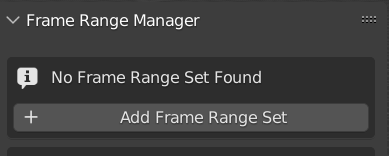
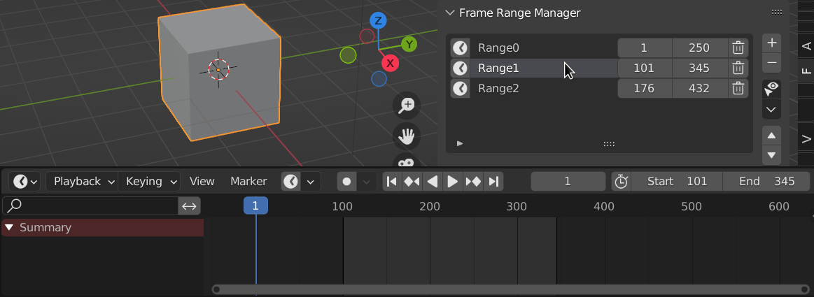
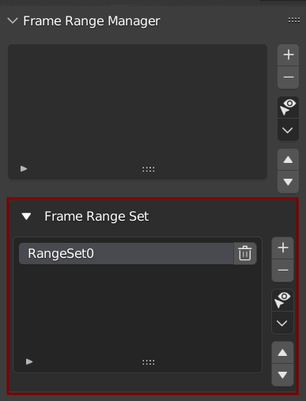
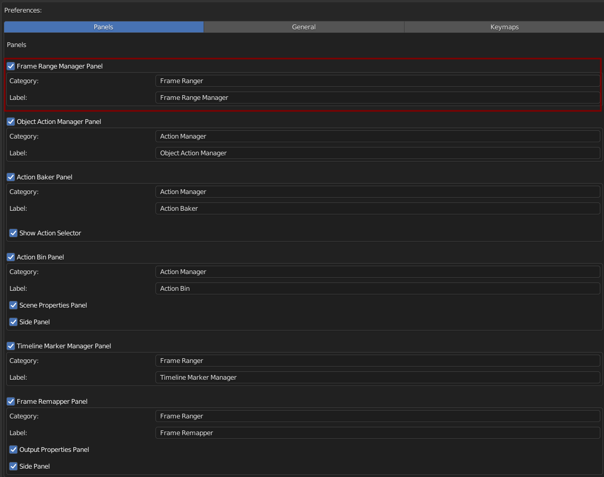

Frame Range Manager

Getting Started
When You Open Blender in A Fresh New Blend File, You Will Need to Start by Adding A New Frame Range Set
Frame Ranger will Prompt You to Add Frame Range Set.
This prompt will appear when there is no Frame Range Set found in Scene
Click the Add Frame Range Set Button to Get Started
Behaviour
Setting the Active Item in the List will Update the Scene’s Frame Range
Note
When Setting Frame Range using Frame Range Manager, it will automatically turn off Auto Frame Range so that it won’t fight with it.
Frame Range List
Frame Range Manager is a List that Stores Frame Range So That you can Switch to it on a later time Easily
It Can Be Useful to split your animation into smaller easy to work with chunks when animating, allow you to work on a smaller area without manually typing in the frame range.
Frame Range Set
Each Frame Ranges is Stores in a Frame Range Set, think of it as a Group of Frame Ranges.
By Using Frame Range Set, You Can Create Multiple Groups of Frame Ranges and change them depending on which one you need.
Preferences
You Can Enable / Disable, Rename Category, and Rename Label in Preferences

Default Category: Frame Ranger
Default Label: Frame Range Manager